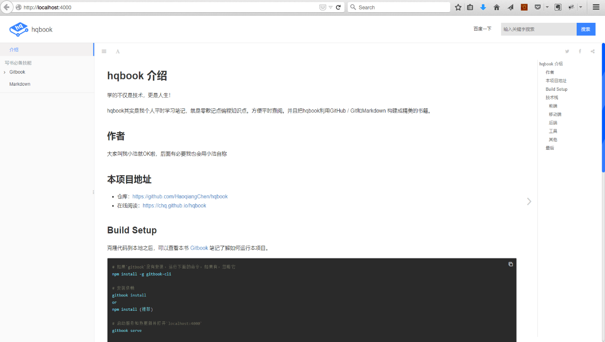
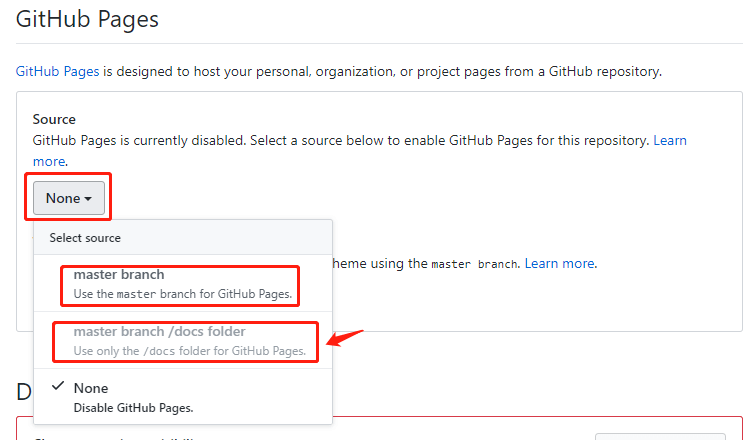

Gitbook 打包输出
输出为静态网站
你有两种方式输出一个静态的网站：
本地预览是自动生成
当你编辑好 gitbook 文档之后，你可以使用 gitbook 的命令来进行本地预览。
$ gitbook serve ./{book_name}
gitbook会启动一个4000端口用于预览。
比如，通过gitbook serve来预览本文档：
$ gitbook serve gitbook-howtouse
Press CTRL+C to quit ...
Live reload server started on port: 35729
Starting build ...
Successfully built!
Starting server ...
Serving book on http://localhost:4000
你可以你的浏览器中打开这个网址： http://localhost:4000

你会发现，在你编辑的gitbook项目的目录中会多一个_book目录，而这个目录中就是生成的本地预览的静态网站内容。
使用gitbook build参数
与直接预览生成的静态网站不一样的时，使用这个命令，你可以将内容输出到你想要的目录。如果不使用 --output 参数则默认在当前文件夹下
$ gitbook build --output=/tmp/gitbook
Starting build ...
Successfuly built !
$ ls /tmp/gitbook/
howtouse search_index.json
book imgs output
gitbook index.html publish
无论哪种方式，你都可以将这个静态网站打包，发布到你想要发布的服务器上，或者直接将这个打包文件给阅读者。
生成电子书和PDF
GitBook不仅可以生成静态网站，也可以将内容输出为电子书(ePub，Mobi，PDF)格式。
＃生成PDF文件
$ gitbook pdf ./ ./mybook.pdf
＃生成ePub文件
$ gitbook epub ./ ./mybook.epub
＃生成Mobi文件
$ gitbook mobi ./ ./mybook.mobi
安装ebook-convert
ebook-convert 是生成电子书所必需的(epub，mobi，pdf)插件。
Linux系统
安装Caliber应用程序。
$ sudo aptitude install calibre
在某些Linux发行版中安装nodejs，您还需要手动创建一个nodejs软链接：
$sudo ln -s /usr/bin/nodejs /usr/bin/node
苹果OS X系统
下载Caliber应用程序。将calibre.app移动到您的应用程序文件夹后，创建一个指向ebook-convert工具的软件链接：
$ sudo ln -s ~/Applications/calibre.app/Contents/MacOS/ebook-convert /usr/bin
这样就可以在任何目录下执行目录执行ebook-convert命令。
如果出现Operation not permitted异常，说明系统权限限制，需要配置环境变量的方式解决
$ sudo ln -s /Applications/calibre.app/Contents/MacOS/ebook-convert /usr/bin
ln: /usr/bin/ebook-convert: Operation not permitted
环境变量配置
先启动ebook-convert完成第一次启动配置，然后关闭。接着在命令行窗口修改环境配置文件，加入EBOOK_PATH（ebook-convert命令的所在目录）
vim ~/.bash_profile
export EBOOK_PATH=/Applications/calibre.app/Contents/MacOS
export PATH=$PATH:$EBOOK_PATH
然后刷新一下刚刚的配置:
source ~/.bash_profile
最后测试一下ebook-convert指令是否能正常被调用：
$ ebook-convert --version
ebook-convert (calibre 2.81.0)
Created by: Kovid Goyal <kovid@kovidgoyal.net>
大功告成！下面就可以使用gitbook pdf ./ ./mybook.pdf 命令把你的项目生成pdf文档了！
封面
Gitbook 的封面可以通过插件auto cover自动生成，也可以自己配置。
如果要使用自定义的封面，在书籍的根目录下放置 cover.jpg，如果想要小版本封面可以放置 cover_small.jpg，文件格式必须为 jpg
一个合格的封面应遵守以下准则：
- 大小要求 cover.jpg 1800x2360 像素 , cover_small.jpg 200x262
- 不要有边框
- 清晰可见的书名
- 任何重要的文本应该在小版本中可见
自动封面
GitBook插件 (autocover) 同样可以用来为你生成一个封面文件，或者仅仅从大封面中生成 cover_small.jpg。这个插件默认会被添加到托管的书本中。
生成PDF
进入文档项目目录，输入gitbook pdf ./ ./gitbook.pdf
$ cd ~/gitbook-cn
$ gitbook pdf ./ ./gitbook.pdf
- pdf： 表示生成pdf格式，还有epub、mobi可选
- ./ ： 表示需要生成书籍的项目根目录
- ./gitbook.pdf : 表示生成书籍的名称
- 如果你的书籍有多种语言，就会生成多本书籍，书籍的名称会以语言结尾
Gitbook 发布
可以使用Github Pages服务将我们写的Gitbook发布到互联网上，前提是你已经了解了Git、Github及Github Pages的使用。
发布到 Gitbook.com
Gitbook.com 是一个发布gitbook编写书籍的在线网站，提供公开和私有的托管服务，和GitHub一样，私有的Gitbook是需要付费使用的。但是公开的书籍是无上限的，使用在线的Gitbook可以让未接触过Git和Markdown的作者轻松的创建书籍，并且在线的编辑器可以让作者安心的只关心内容，而不必在意排版，并且支持多人协作编写。
在Gitbook上建立账户，新建项目之后，其实也是一个 Git 项目，如果对 Git 熟悉，将本地内容推送到远端即可。
发布到Github Pages
GitHub Pages 是 GitHub 提供的静态网站托管服务。
GitHub 上的每个仓库都可以拥有一个 GitHub Pages，对应的 URL 如下：
https://<username>.github.io/<repository>/
GitHub Pages 的静态资源支持下面 3 个来源：
master分支master分支的/docs目录gh-pages分支
你可以在项目页面右下角setting中看到：

小浩就是直接将静态资源设置为第二个master 分支的 /docs 目录，然后开发完后因为gitbook serve已经生成打包了_book，所以直接重命名为
docs文件夹，之后直接提交到master分支。
将静态网站直接发布到Github Pages
可以将编写好的.md文件通过Gitbook处理成静态网站，然后发布到Github Pages上。
将md文件与Github Pages静态文件存放在一个仓库中。md文件为master分支，而html文件为 gh-pages分支。
下面将介绍使用一个仓库托管源码，而使用 Travis 自动将静态网站发布到 gh-pages 分支中。这样就可以避免提交源码的同时，还需要同步一遍 gh-pages 分支。
domenic 制作了一个脚本，当 master 分支更新时，自动使用 CI Travis 拉取更新，然后和 gh-pages 分支做比较，如果有差异了，自动将 master 分支的修改提交到 gh-pages 分支。
使用项目的Pages服务
除了上面的直接发布静态文件到Github Pages的方法以外，还可以使用一个单独的项目的Github Pages功能。
创建仓库与分支
- 登陆到Github，创建一个新的仓库，名称我们就命名为
gitbook-tutorial，这样我就得到一个gitbook-tutorial仓库。 - 克隆仓库到本地：
git clone git@github.com:/USER_NAME/gitbook-tutorial.git - 创建一个新分支：
git checkout -b gh-pages，注意，分支名必须为gh-pages。 - 将分支push到仓库：
git push -u origin gh-pages。 - 切换到主分支：
git checkout master。
经过这一步处理，我们已经创建了gh-pages分支了，有了这个分支，Github会自动为你分配一个网址。
打包gitbook项目发布到GitHub pages
执行下面命令，将 _book 目录推送到 GitHub 仓库的 gh-pages 分支。
$ git subtree push --prefix=_book origin gh-pages
或者在生成静态网页时，将保存的目录指定为 ./docs
$ $ gitbook build ./ ./docs
然后直接推送到 GitHub 仓库的。
$ git push origin master